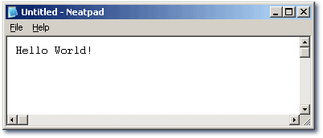
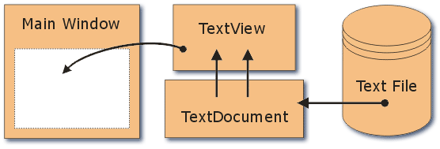

Neatpad Overview
Introduction
新しいチュートリアルシリーズ、"Design and Implementation of a Win32 Text Editor!" へようこそ。このチュートリアルの目的は、コードネーム「Neatpad」と呼ばれるWin32テキストエディタの開発をフォローすることです。それぞれのチュートリアルでは、主要なコンポーネントと設計上の決定事項を段階的に説明します。" />
さて、タイトルに「テキストエディタ」とありますが、このチュートリアルシリーズの本当の目的はそこではありません。むしろ、テキストエディタの中核となる編集フロントエンドを提供できる、完全なエディットコントロールを書くことが目的です。もちろん、コードをテストするために小さなテストアプリケーション(Neatpad)を作らなければなりませんが、Windows標準のメモ帳以上のことはしません。Alternative Win32 Solutions
始める前に、以下の3つのwin32オープンソース・エディター・コンポーネントもチェックしてみてください。Scintilla, Brainchild and CrystalEdit.
特にScintillaは非常に優れた機能を持っていますが、この3つのエディタはいずれもコードベースが大きく扱いにくいという問題を抱えており、またメモリ管理の仕組みにも限界があるため、大きなファイルは特にスマートに処理できません。Text Editor Resources
以下のリソースは、個々のアプリケーションではなく、テキストエディタのデザインについて説明していますので、リンク先に目を通し、そこにあるものを読んでみるのも有益な練習になるでしょう。Data Structures For Text Sequences
様々なテキストエディタのデータ構造を比較、解説しています。サンプルコードはありませんが、著者(Charles Crowley)は非常に良い仕事をしています。目立つのは「ピーステーブル」方式で、これは私のHexEditのデザインの元になったアイデアでもあります。これは、私たちが独自のテキストエディタに使用する方法になります。上のリンクはかなり古いもので、メインページからはもうアクセスできません。また、画像も失われています。しかし、完全なPostScript版はここからダウンロードできます。また、PDFバージョンもありますので、直接ダウンロードすることもできます。 EMACSテキストエディタの設計に関する問題を議論しています。非常に有名なエディタですが (主にそのユーザインタフェースのために)、 「バッファギャップ」方式を採用しているようで、おそらく EMACS は大きなファイルには向いていないでしょう。Design and Implementation of an Advanced Text Editor
説明されているテキストエディタは決して高度なものではありませんが（「ベーシック」と言っても過言ではありません）、この文書にはテキストエディタとユーザーインターフェースに関する興味深いアイデアが含まれています。 他のテキスト編集関連の文書やウェブサイトへのリンクも充実しています。Edit-control requirements
まず最初にしなければならないことは、この仕事を完璧にこなせるテキストコントロールがすでに存在しないかどうかを確認することです。これを読んでいる人は、私と同じ結論に達しているのではないでしょうか。Windows標準のエディットコントロールやリッチエディットコントロールは、速度が遅く、大きなファイルを扱えず、まず第一にフリックの問題があり、私はフリックするアプリが嫌いなのです。)このプロジェクトを始めようと思った一番の理由は、私にとっても、このシリーズを読んでいる人にとっても、勉強になるということです。さて、独自のエディットコントロールを作ることが決まったところで、次のステップは、エディットコントロールにどんな機能を持たせるかを決めることです。この最初の設計案は、最終的な実装に大きな影響を与える可能性があるため、重要です。では、順不同で、私がエディットコントロールに求める機能を紹介しましょう。
- 無制限のファイルサイズと行数の編集が可能で、ファイルサイズが大きくなってもパフォーマンスの低下はほとんど（あるいは全く）ありません。
- 高速で滑らかなグラフィック表示。これには、テキストの選択や、アーティファクトやグリッチのないスムーズなスクロールが含まれます。
- シンタックスカラーリング。私たちはプログラマーですから、ソースコードにシンタックスカラーを付けられないエディットコントロールに何の意味があるのでしょうか :-)
- クリップボードとドラッグ＆ドロップに完全対応。
- シングルフォントのみ。まずは固定幅のフォントに限定しますが、難しそうでなければ可変幅のフォントを扱うことも視野に入れています :-)
- 完全なUndoとRedoのサポート。
- ASCII、Unicode、UTF-8に対応しています。
この記事のシリーズを進めていく中で、さらなる機能を夢見ていくことになると思いますが、今はこれで十分だと思います。)
Choice of language
これは難しい問題ですね。現実的には、CとC++のどちらかを選ぶことになります。Cは、誰でもコンパイルできるという点で優れていますが、C++は、この種の制御を書くのが容易であるという利点があります。このチュートリアルでは、CとC++の混合言語を使用します。テキストエディタコントロールはC++を使って書きますが、メインアプリケーション（Neatpad）は「純粋なwin32」Cで書かれているので、コントロールには「C」のインターフェースを提供します。
このコントロールは、.NETやVisual Basicなどの高級言語では使用できません。本連載の最終回では、エディタコントロールを外部DLLに入れて他の言語でも使用できるようにすることを検討するかもしれませんが、今のところ、これはサードパーティのライブラリを使用しない純粋なC/C++ソリューションです。
Design of a Text Editor
テキストエディタは概念的にはとてもシンプルです。メモ帳を見てみましょう。メインウィンドウと、その中にある「編集」コントロールだけがあります。テキストエディタを実装する際には、このようなデザインを採用しています。
下の図は、テキストエディタの主要な構成要素を示しています。まず最初に、トップレベルのメインウィンドウがあります。これは、タイトルバー、メニューバー、ステータスバーを含むウィンドウです。メインウィンドウは、テキストファイルを編集する方法を知らず、ユーザーにインターフェースを提供することだけが目的です。このコンポーネントは純粋なwin32 Cで書かれています。
" />
最も重要なコンポーネントは、「TextView」です。これは、メイン（親）ウィンドウの子となる別ウィンドウです。TextViewは、テキストエディタのビジュアルコンポーネントです。このコントロールの主な目的は、テキストの表示と編集ですが、これ以外にも、スクロールバーの表示、マウスやキーボードの入力の処理、ドラッグ＆ドロップのサポートなど、他の機能も必要となります。
TextDocument」コンポーネントは目に見えるものではありませんが、メモリに読み込まれたテキストファイルを保存したり操作したりするために使用されます。テキストオブジェクトには、ウィンドウ、マウス、描画、ペイントなどの概念はありません。テキストを操作したり、何かを描きたいときにエディットコントロールにテキストを渡したりすることしかできません。
最後のコンポーネントは、実際にはテキストエディタの一部ではありませんが、重要な役割を果たしています。それは、編集したいテキストを保存するディスクファイルです。TextDocumentは、このテキストファイルと直接インターフェースをとり、新しいドキュメントを読み込んだり保存したりするときに、このテキストファイルに読み書きします。
TextViewとそれを格納するデータ(TextDocument)を分離することが重要です。これには2つの大きなメリットがあります。1つは、1つのテキストオブジェクトに複数のエディットコントロールをアタッチすることができること。最大の利点は、ビジュアルコンポーネントのデザインに影響を与えることなく、テキストファイルの保存と表現方法をいつでも変更できることです。
コンポーネントの設計で注意しなければならないのは、各コンポーネント間の「インターフェイス」です。TextViewは、線を中心としたグラフィカルな存在です。エディットウィンドウで行われる作業のほとんどは、ディスプレイの更新です。そのためには、TextDocumentから行ごとにデータを取得する必要があります。
一方で、TextDocument とディスクファイルの間のインターフェースもあります。TextDocument は、行ごとの戦略ではなく、ファイル全体を一度にメモリに読み込むか、管理可能なチャンクでファイルにアクセスします。いずれにしても、私たちは興味深い設計上の決断を迫られています。)
Neatpad - a Win32 Text Editor
このチュートリアルの一番上には、スケルトンのテキストエディタのソースコードが入ったZIPファイルへのリンクがあります。私はこのプロジェクトをWindows標準のメモ帳を参考にして「Neatpad」と名付けました :-)
When you unzip the download, there will be a single Visual C++ project workspace ( neatpad.dsw ) and two subdirectories ( Neatpad and TextView ). The Neatpad directory contains several files, the important ones listed below:
-
neatpad.c- the main Neatpad application source file. resource.rc/h- Neatpad’s resources.neatpad.dsp- the Visual Studio project.
トップレベルのディレクトリにあるメインの neatpad.dsw ワークスペースを使って作業することを意図しています。このワークスペースでは、プロジェクト全体(Neatpad と TextView)を構築することができます。ワークスペースとプロジェクトは Visual Studio 6.0 形式ですが、他の IDE に変換するのは難しくありません。
TextView - a Win32 Custom Control
TextViewディレクトリには、C++で実装されたWin32カスタムコントロールのスケルトンのソースコードが含まれています。このコントロールは、ウィンドウに "Hello World "を表示する以外には何もしません。実際、ほとんどのコードは、空のTextViewウィンドウを登録・作成するのに必要なものだけです。
There are four files in the TextView directory - TextView.dsp, TextView.c, TextView.h and TextViewInternal.h:
-
TextView.h- the “public interface” to the TextView control. -
TextView.c- the main implementation of the TextView window. -
TextViewInternal.h- the private header file used by TextView.c, and contains the TextView C++ class definition. TextView.dsp- the Visual Studio project.
Most of the future tutorials will concentrate on adding functionality to the TextView project.
Public Interface to the TextView
TextViewをコントロールする基本的な方法は、標準的なEditコントロールで使用するのと同様に、SendMessage APIを使用したWindowsメッセージです。これを実現するためには、使用できるメッセージ値の範囲を定義する必要があります。これらのメッセージ値は、"パブリック "なTextView.hで定義されますので、プロジェクトでTextViewコントロールを使用したいときは、単に#include TextView.hを実行してください。
#define TEXTVIEW_CLASS "TextView32"
#define TXM_BASE (WM_USER)
#define TXM_OPENFILE (TXM_BASE + 0)#define TextView_OpenFile(hwndTV, szFile) \
SendMessage((hwndTV), TXM_OPENFILE, 0, (LPARAM)(szFile))
ご覧の通り、これまでに定義されたメッセージはTXM_OPENFILEの1つだけです。このチュートリアルを進めて、TextViewにもっと機能を追加していくと、もっと多くのメッセージを追加していくことになるでしょう。私は、このTextViewが、標準的なEM_xxxエディットコントロールのメッセージもサポートしていると想像しています。
上で定義したマクロ（TextView_OpenFile）は、コントロールの代替インターフェースを提供します。基本的にはSendMessageコールのラッパーであり、より使いやすくなっています。ファイルを開く例を以下に示します。
TextView_OpenFile(hwndTextView, "C:\\SRC\\TEXTVIEW\\README.TXT");
Coming up in Part 2
このチュートリアルシリーズの最初の部分は、私たちが何を達成しようとしているかを紹介するものでした。ここでは、読者（あなた）が少なくともC言語とWin32の知識を持っていることを前提としています。なぜなら、これらのチュートリアルから利益を得ようとするなら、相応のプログラミング経験が必要だからです。コードは非常にシンプルですが、様々なコンポーネントがどのように組み合わされているかを理解することが重要です。
今後のチュートリアルでは、テキストビューコントロールの機能の詳細を説明していきます。テキストエディタを試しているうちに、必要と思われる手順のリストを作成しました。以下のリストをご覧になれば、このチュートリアルシリーズの流れがお分かりになると思います。
- Drawing lines of text
- Scrolling and scrollbars
- Selection and highlighting using the mouse
- Syntax colouring
- Ascii, Unicode and UTF-8
- Keyboard and Mouse input
- Highlighting and text-selection.
- Selection margin and borders.
- Loading large files
- Editing large files
- Undo and Redo
- Clipboard and Drag+Drop
- Scrolling with the mouse
- Searching for data
- Folding editors
I will try and stick to the above topics as closely as possible, but bear in mind that I don’t have a fixed project plan, so we will see this text editor evolve incrementally over the next few weeks.